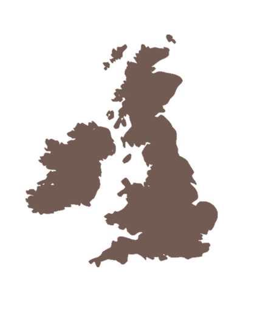

Alerts: The app will provide alerts for any emergencies in your area. These could be health, weather or safety related emergencies.

Location Mapping: Access a map showing all emergenices and where they are affecting.
Communication Features: You can access communication features allowing you to chat with friends within the app.
Mobile App: There is a mobile version of BEAS avaliable for compatible devices.